Module 1 · Neuroglancer Navigation & Organelles
MICrONS workshop
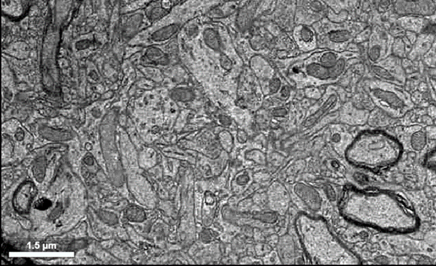
Overview
In this first module you will get oriented in Neuroglancer — the browser tool used to explore the MICrONS reconstruction of mouse visual cortex — and then use it to identify subcellular organelles and ultrastructure in the raw electron-microscopy (EM) data.
The MICrONS volume is one cubic millimeter of cortex, imaged by EM and densely segmented into ~200,000 cells and ~500 million synapses (The MICrONS Consortium et al. 2025).
Learning goals
- Navigate the EM, segmentation, and annotation panels of Neuroglancer, and move through the raw EM volume in 2D and 3D.
- Identify neuronal ultrastructure in EM — nuclei, mitochondria, smooth ER, myelinated axons, and synapses — and relate each to its function.
- Place point annotations on structures you find and share a Neuroglancer state with your instructor.
If you have not already, work through the Setup & FAQ page — you need a Google login and a one-time Terms-of-Service acceptance to view the data. Your answers on this page save automatically in your browser; use Download all (bottom-right) to export them.
Part 1.1 · Getting oriented in Neuroglancer
Open the Module 1 scene by clicking the link (or paste it into Chrome or Firefox):
You should see three panels:
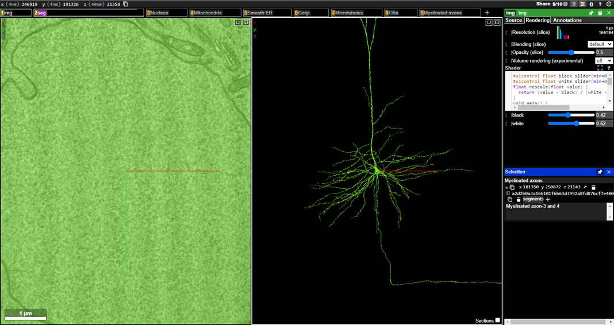
- The left panel shows the raw EM images — the imaged sections of the cortical volume. Here you are looking directly into the nucleus of a neuron.
- The middle panel shows the 3D segmentation: the reconstructed neuron (a pyramidal cell) whose nucleus you are looking at, with its dendritic arbor and a thin axon leaving the soma.
- The right panel holds the settings for whichever layer you select.
Accept the Terms of Service on your Google account (https://global.daf-apis.com/sticky_auth/api/v1/tos/2/accept), hard-refresh, and if a red error persists, ask your instructor. More in the Setup & FAQ.
Layer tabs
The boxes across the top of the EM panel are layer tabs. The img tab is the raw EM image layer.
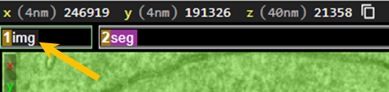
- a layer tab to open its settings in the right-hand panel.
- left-clickleft-click a layer tab to toggle it on/off (a strikethrough means it is off).
- Do not click the “x” or trashcan — that removes the layer entirely.
Imagery brightness/contrast
You can edit the brightness and contrast of the imagery layer with the “shader tool”. You can either access this from:
- on the
imglayer tab to open its settings in the right-hand panel. - open the “Rendering” submenu
- scroll down to the “shader controls”
Or, use the Palette Tool shortcut (wrench in the open menu) and select: “Shader Controls”. This opens a submenu within your view where you can adjust the brightness and contrast slider
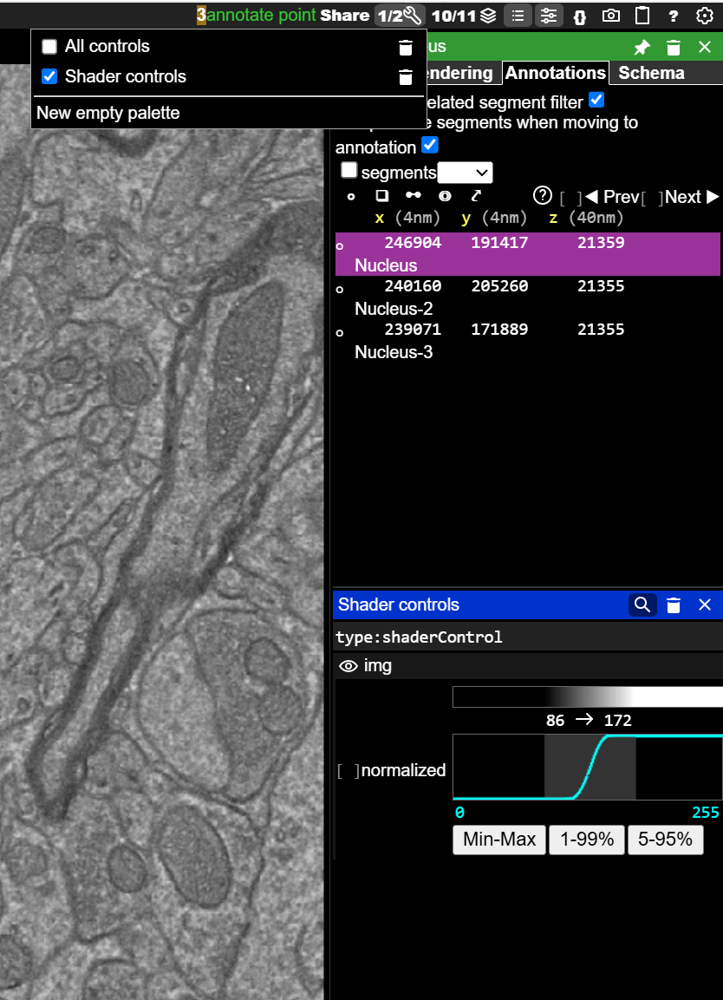
Moving in the 3D (segmentation) panel
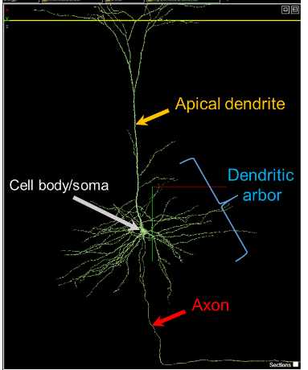
- Jump to a location:
- Rotate: Left-ClickLeft-Click + drag
- Pan: Shift+Left-ClickShift+Left-Click + drag
- Zoom: CtrlCtrl + scroll-wheelscroll-wheel
Moving in the 2D (EM) panel
- Pan: Left-ClickLeft-Click + drag
- Zoom: CtrlCtrl + scroll-wheelscroll-wheel
- Step through sections in z: scroll-wheelscroll-wheel, or ,, / ..
This data is anisotropic — sections are thicker than they are wide. Keep the 2D plane square-on; if it rotates accidentally, hover over the 2D panel and press zz to reset. Toggle the section overlay in 3D with ss.
- Select more segments with Double-Left-ClickDouble-Left-Click to highlight the segment in both 2D and 3D. Double click again to hide (can still be found on your righthand segment menu)
Take a couple of minutes to rotate, pan, zoom, and step through z until the controls feel natural.
Part 1.2 · Organelles and ultrastructure in EM
The scene has a pre-made annotation layer for each structure below, with three examples already placed. For each:
- left-clickleft-click the layer tab to reveal it
- the same tab to load its annotations into the right-hand panel
- each annotation to jump to it.
Then find one more of your own with the point-annotation tool (Ctrl+Left-ClickCtrl+Left-Click on the EM image), and estimate its size from the scale bar (bottom-left of the EM panel).
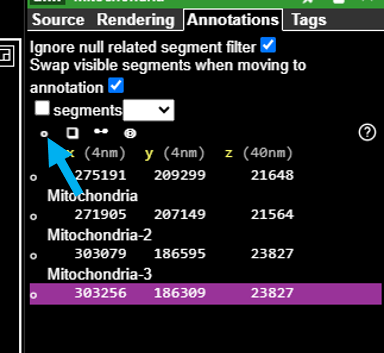
Nucleus
Houses the DNA and is the site of transcription. The blue arrow marks the interior; the yellow arrow the nuclear membrane. Surrounding axons and dendrites look tiny by comparison.
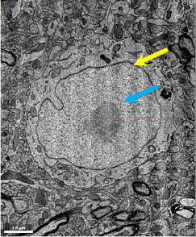
Find one more nucleus, annotate it, and estimate its diameter (with units) using the scale bar.
Mitochondria
The cell’s ATP factories (blue arrow), often positioned near synapses where energy demand is high.
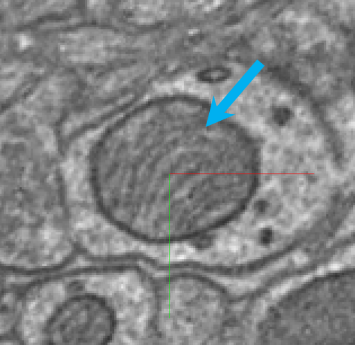
Adjust brightness/contrast with the Shader Control submenu in the layer’s Tool Palette.
Find one more mitochondrion, annotate it, and estimate its size.
Smooth endoplasmic reticulum
Tubular, ribosome-free membrane (blue arrow); a site of lipid synthesis and intracellular calcium storage. Usually found in the soma, near the nucleus.
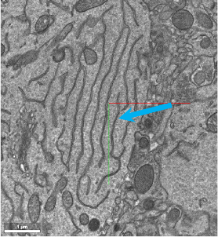
Find one more example of smooth ER, annotate it, and estimate its width in the plane of section.
Myelinated axons
Myelin is a fatty, insulating wrap made of oligodendrocyte membranes that speeds conduction. In EM it appears as dark concentric rings around a transected axon (blue arrows).
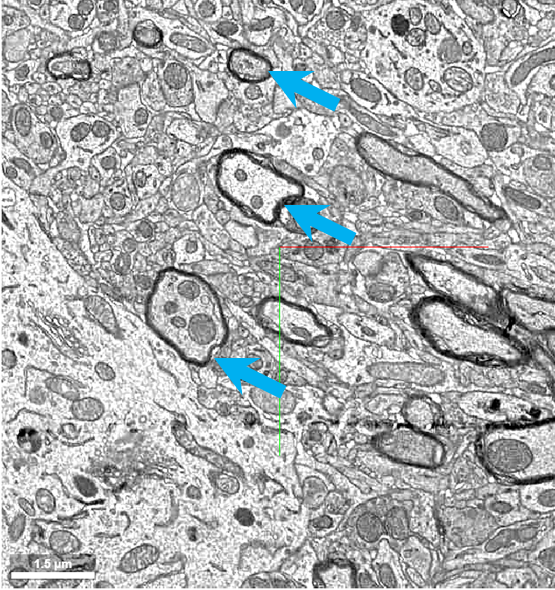
Find one more myelinated axon, annotate it, and estimate the axon diameter (including the myelin sheath).
Synapses
Identified by presynaptic vesicles (blue arrows) and pre-/post-synaptic densities (yellow arrowheads), with a thin synaptic cleft between them.
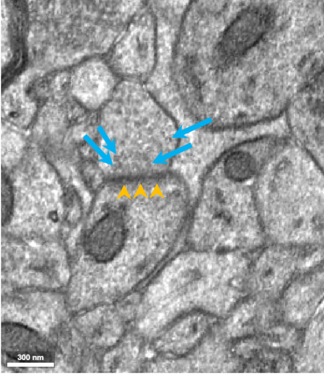
In the 3D panel, synapses often show up as a presynaptic axonal “bulge” meeting a postsynaptic spine “head.” double-left-clickdouble-left-click on the EM image to pull the pre- and post-synaptic partners into the 3D panel and rotate to see the contact.
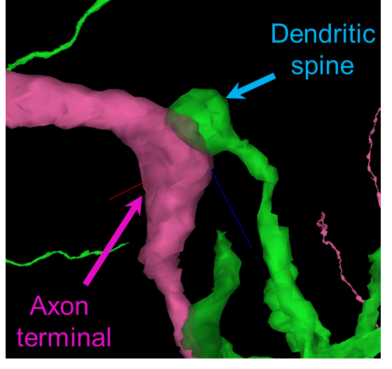
Find one more synapse, annotate it, and estimate the width of the pre-/post-synaptic contact (the postsynaptic density).
At your synapse, count how many vesicles you see in one section. Do you see more or less as you scroll in z.
Optional · See the cortical layers
If you would like to see how the cells you have been exploring sit within the layered structure of cortex, open this scene, which shows the Layer 1–6 boundary meshes:
Additional resources
Explore the dataset further at MICrONS-Explorer.org.